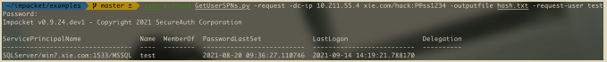

Kerberoasting 攻击¶
Kerberoasting攻击发生在Kerberos协议的TGP_REP阶段，KDC的TGS服务返回一个由服务哈希加密的ST服务票据给客户端。由于该ST服务票据是用服务哈希经过 RC4_HMAC_MD5 加密算法加密的，因此客户端在拿到该 ST 服务票据后可以用于本地离线爆破。如果攻击者的密码字典足够强大，则很有可能爆破出 SPN 链接用户的明文密码。如果该服务在域内被配置为高权限运行的话，那么攻击者可能接管整个域。
整个过程最核心的点在于攻击者和 KDC 协商 ST 服务票据加密的时候，协商的是使用 RC4_HMAC_MD5 加密算法。而该加密算法又相对较容易被破解，因此攻击者能在本地离线爆破。
Kerberoasting 攻击过程¶
如图所示，是 Kerberoasting 攻击的过程：

①：攻击者提供一个正常的域用户密码对一个域进行身份认证，KDC 在验证账号密码有效性后，会返回一个 TGT 认购权证。该 TGT 认购权证用于以后的 ST服务票据请求。
②：攻击者使用获得的 TGT 认购权证请求针对指定 SPN 的 ST 服务票据。在服务票证请求(TGS-REQ)过程中，攻击者可以指定它们支持的 Kerberos 加密类型为 RC4_HMAC_MD5(ARCFOUR-HMAC-MD5)，因为 RC4_HMAC_MD5 加密算法相比于其他加密算法更容易被破解。
③：如果攻击者的 TGT 认购权证是有效的，不管攻击者提供的域用户账号有无访问该指定 SPN 服务的权限，KDC 都会查找哪个帐户在ServicedPrincipalName 属性中注册了所请求的 SPN，然后用该用户的哈希以RC4_HMAC_MD5 加密类型加密 ST 服务票据并在 TGS-REP 返回包中发送给攻击者。
④：攻击者从 TGS-REP 中提取加密的 ST 服务票据。 由于该 ST 服务票据是用链接到请求的 SPN 的帐户哈希加密的，所以攻击者可以本地离线破解这个 ST服务票据。如果攻击者的字典足够强大，则可以爆破出该 SPN 所链接账户的明文密码。
注：Kerberosating 攻击一般只针对注册在用户下的 SPN，因为机器账号的密码是随机生成 128 位字符，是不可能爆破出来的。
Kerberoasting 攻击在实战中主要分为如下四步：
- 查询域内注册于域用户下的 SPN
- 请求指定 SPN 的 ST 服务票据
- 导出请求的 ST 服务票据
- 对该导出的 ST 服务票据进行离线爆破
有些工具对第一二步合并在一起，发现了可能存在弱密码的 SPN 后，直接请求该指定 SPN 的服务票据。以下演示几个工具的用法。
SPN 服务主体名称的发现¶
这是 Kerberoasting 攻击的第一步。首先，发现域内所有注册于域用户下的SPN。默认情况下，域内会有一个注册在 krbtgt 用户下的 SPN kadmin/changepw。但是该 SPN 对于Kerberoasting攻击是没有意义的，因为krbtgt用户的密码是随机生成的，几乎不可能爆破出来。我们可以使用以下几款工具用于进行 SPN 服务主体名称的发现。
1.RiskySPN¶
RiskySPN 是一个 PowerShell 脚本的集合，专注于检测滥用与 SPN 相关的帐户。该脚本可以帮助我们自动识别弱密码服务票据，根据用户帐户和密码过期时限来查找最容易包含弱密码的票据。如下命令，该脚本会自动查找并过滤出(自动去除注册于 krbtgt 下的 kadmin/changepw)当前域内注册于域用户下的可能包含弱密码的 SPN 的详细信息。
Import-Module .\Find-PotentiallyCrackableAccounts.ps1;
Find-PotentiallyCrackableAccounts -FullData -Verbose
如图所示，运行Find-PotentiallyCrackableAccounts.ps1脚本探测域内注册于用户下的 SPN，可以看到探测出 hack 和 test 用户下注册了 SPN。

2.GetUserSPNs¶
GetUserSPNs 是 Kerberoast 工具集中查询注册于域内用户下的 SPN 的脚本，该脚本会查询域内所有注册于用户下的 SPN，包括注册于 krbtgt 下的kadmin/changepw。该工具集中有 powershell 和 vbs 两种语言的脚本。
其中的 powershell 脚本用法如下：
如图所示，运行GetUserSPNs.ps1 脚本进行探测，可以看到探测出 krbtgt、hack 和 test 用户下注册了 SPN。
vbs 脚本的用法如下：
如图所示，运行 GetUserSPNs.vbs 脚本进行探测，可以看到探测出 krbtgt、hack 和 test 用户下注册了 SPN。
3.PowerView.ps1¶
PowerView.ps1 是 PowerSpolit 中 Recon 目录下的一个 powershell 脚本，该脚本可以用于查询过滤出域用户下注册有 SPN 的用户，包括 krbtgt 用户，并返回用户的详细信息。该脚本使用如下：
如图所示，使用 PowerView.ps1 脚本进行探测，可以看到探测到 krbtgt、hack 和 test 用户下注册了 SPN，并返回了 krbtgt 用户、test 用户和 test 用户的详细信息。

如图所示，可以看到返回了 test 用户和 hack 用户的详细信息。

请求服务票据¶
当过滤出注册于用户下的 SPN 之后，我们就需要请求这些 SPN 的服务票据了。可以使用以下几款工具进行 SPN 服务票据的请求。
1.Impacket 请求¶
impacket 中的GetUserSPNs.py脚本可以请求注册于用户下的所有 SPN 的服务票据。使用该脚本需要提供域账号密码才能查询。
如下命令，将请求注册于用户下的所有 SPN 的服务票据并以 hashcat 能破解的格式保存为 hash.txt 文件。
如图所示，运行 GetUserSPNs.py 脚本请求注册于用户下的所有 SPN 的服务票据并以 hashcat 能破解的格式保存为 hash.txt 文件。

如下命令，将请求注册于指定用户下的 SPN 的服务票据并以 hashcat 能破解的格式保存为 hash2.txt 文件。
python3 GetUserSPNs.py -request -dc-ip 10.211.55.4 xie.com/hack:P@ss1234 -outputfile hash2.txt -request-user test
如图所示，运行 GetUserSPNs.py 脚本请求注册于 test 用户下的 SPN 的服务票据并以 hashcat 能破解的格式保存为 hash2.txt 文件。
2.使用 Rubeus 请求¶
Rubeus 里面的 kerberoast 支持对所有用户或者特定用户执行 kerberoasting操作，其原理在于先用 LDAP 查询域内所有注册在域用户下的 SPN(除了kadmin/changepw)，再通过发送 TGS 包，然后直接打印出能使用 John 或hashcat 爆破的 Hash。
如下命令会请求注册于用户下的所有 SPN 的服务票据，并以 hashcat 能破解的格式保存为 hash.txt 文件。
如下命令会请求注册于用户下指定 SPN 的服务票据，并以 hashcat 能破解的格式保存为 hash2.txt 文件
3.powershell 命令请求¶
如下 powershell 命令用于请求指定 SPN 的服务票据，请求的服务票据保存在内存中。
Add-Type -AssemblyName System.IdentityModel
New-Object System.IdentityModel.Tokens.KerberosRequestorSecurityToken -ArgumentList "MySQL/win7.xie.com:3306"
如图所示，通过运行 powershell 命令请求指定SPN"MySQL/win7.xie.com:3306" 的服务票据。

4.mimikatz 请求¶
使用 mimikaatzc 存在内存中，命令如下：
#请求服务票据
kerberos::ask /target:MySQL/win7.xie.com:3306
#列出服务票据
kerberos::list
#清除所有票据
kerberos::purge
如图所示，使用 mimikatz 请求指定 SPN"MySQL/win7.xie.com:3306" 的服务票据。

导出服务票据¶
以上请求服务票据的过程中，有的工具可以直接将票据以 base64 形式打印出来保存为文件，而有的工具会将票据保存在内存中。所以对于保存在内存中的票据，我们可以使用工具将票据从内存中导出来。
1.查看内存中的票据¶
首先，我们需要查看一下内存中保存的票据。可以使用以下命令查看内存中的票据。直接在 cmd 窗口执行 klist 或者在 mimikatz 下面执行。
如图所示，执行 klist 查看内存中的票据。

使用 mimikatz 查看内存中的票据。
查看了内存中的票据后，我们就需要将票据从内存中导出成文件了。
2.mimikatz 导出票据¶
执行如下命令，使用 mimikatz 将内存中的票据导出来，执行完成后，会在mimikatz 同目录下导出 后缀为 kirbi 的票据文件。

3.Empire 导出票据¶
也可以使用 Empire 下的 Invoke-Kerberoast.ps1 脚本，可以将内存中的票据以 Hashcat 或 John 能破解的格式打印出来。如下命令，将内存中的票据以Hashcat 能破解的格式打印出来。
如图所示，使用 Invoke-Kerberoast.ps1 脚本导出内存中的票据。

离线破解服务票据¶
通过前面几步拿到了.kirbi 票据文件或 hashcat、John 能直接破解的文件。接下来就需要本地离线破解该服务票据了。
1.kerberoast¶
Kerberoast 是用于攻击 Kerberos 实现的一些工具。该工具中的tgsrepcrack.py 脚本可以对 mimikatz 导出的后缀为.kirbi 格式的票据进行爆破。

2.tgscrack¶
该工具先将后缀为 kirbi 格式的票据转换为该工具能破解的格式，然后通过 go语言脚本指定密码文件进行爆破。
python2 extractServiceTicketParts.py 1-40a10000-hack@SQLServer\~win7.xie. com\~1533\~MSSQL-XIE.COM.kirbi > hash.txt
go run tgscrack.go -hashfile hash.txt -wordlist pass.txtS

3.Hashcat¶
针对 impacket 和 Rebeus 请求的票据格式，可以使用 hashcat 来进行爆破。
Kerberoasting 抓包分析¶
我们通过使用 impacket 执行如下命令请求指定 SPN 服务票据。
python3 GetUserSPNs.py -request -dc-ip 10.211.55.4 xie.com/hack:P@ss1234 -outputfile hash.txt -request-user test
如图所示，使用 impacket 请求指定 SPN 的服务票据。

在攻击的过程中使用 WireShark 进行抓包分析，如图所示，可以看到攻击过程有四个 Kerberos 相关的包。
如图所示，第一个 AS-REQ 包是使用我们提供的用户 xie\hack 向 KDC 的AS 服务请求 TGT 认购权证

如图所示，第二个 AS-REP 包是 KDC 返回 TGT 认购权证，可以看到，TGT认证权证的加密方式为 AES256。
如图所示，第三个 TGS-REQ 包，用上一步拿到的 TGT 认购权证向 KDC 的TGS 服务请求针对 test 用户链接的 SPN 的服务票据。可以看到，请求协商的加密类型有 HMAC_MD5、DES 和 DES3。

如图所示，第四个 TGS-REP 包，KDC 的 TGS 服务返回由指定 SPN 链接的用户的密码哈希加密的服务票据。可以看到，加密类型为 HMAC_MD5。这种加密方式是可以爆破的。
而正常 TGS-REP 回复包的 ST 服务票据的默认加密类型为 AES256，如图所示：

Kerberoasting 攻击防御¶
- 确保服务账号密码为强密码、并具有随机性、定期修改。
- Kerberoasting 能成功的最大因素就是 KDC 返回的 ST 服务票据是用
RC4_HMAC_MD5加密算法加密的，攻击者可以比较简单的进行爆破。如果配置强制使用AES256_HMAC方式对 Kerberos 票据进行加密。那么，即使攻击者获取了 ST 服务票据，也无法将其破解。但是配置强制使用AES256_HMAC加密方式，也存在兼容性问题！ - 许多服务账户在域中被分配了过高的权限，从而导致攻击者在破解出该服务账号的密码后，能迅速进行域内权限提升。因此，应该对域内的服务账号权限进行限制，采取最小化权限原则。
- 防守方在检测 Kerberoasting 攻击时，可以进行日志审计，重点关注事件 ID 为 4769(请求 Kerberos 服务票证操作)的日志。如果有过多的4769 日志，可以对事件 ID 为 4769 的日志进行筛选。如图所示，是事件ID 为 4769 的日志。然后筛选出票证加密类型为 0x17(RC4-HMAC)的日志，如图所示，是加密类型为 0x17(RC4-HMAC)的日志。
- 可以定期使用 zBang 工具检测当前域内危险的 SPN。如图所示，运行 zBang。

然后选择 Risky SPNs，再点击 Launch。如图所示
过一会就可以看到 zBang 运行成功，如图所示

然后我们通过 RiskySPN Results 结果页面可以看到注册在 administrator 帐户下的 test2 SPN，这是个危险的 SPN，如图所示。